|
|
|
Brown-stripe
wrasse
Halichoeres bicolor
Family Labridae
updated
Sep 2020
Where
seen? This colourful little fish is sometimes seen on some
of our shores, near living reefs, usually alone. Elsewhere, it is
found in silty sand or mud near shallow reefs and seagrass beds.
Features: To about 13cm, those
seen about 6-8cm. Snout pointed, a dark stripe along on the side,
white-ringed black spot on the tail. There is a black spot in the middle of the
front half of the dorsal fin which is not easy to see in a fish that is stranded out of water (fins not spread out). The stripe along the lateral line is
thin in younger fishes and widens to about the same diameter as the
eye as the fish reaches adulthood, with pearly blue spots along the
centre. The black spots on the dorsal fins usually become faded in
large males. There is a reddish brown band on the head, edged with
blue on the side of the snout from the mouth to the front edge of
the eye, and an upward curved band on the cheek below the eye, and
a vertically elongated dark brown spot just behind the eye. |
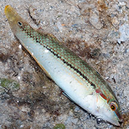
Terumbu Raya, Aug 14
|
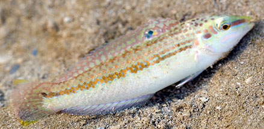
Terumbu Bemban, Jul 14
Photo
shared by Marcus Ng on flickr. |
| Nasty bite! This little fish can give a nasty bite to a naked hand or finger. It is often seen stranded at low tide and our natural instinct is to pick it up and put into a nearby pool of water. This is when the fish can give a painful nip and take out a chunk of your finger or hand! If you really want to transfer it to a pool of water, do not use bare hands. Or you can just leave it alone, the fish is likely to be able to survive until the tide returns. |
|
| Brown-striped
wrasses on Singapore shores |
| Other sightings on Singapore shores |
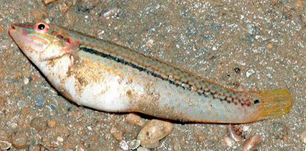
Pasir Ris Park, Mar 13
Photo
shared by Loh Kok Sheng on flickr. |
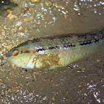
Beting Bronok, Jun 14
Photo
shared by Russel Low on facebook. |
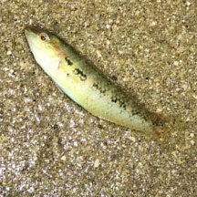
East Coast Park, Sep 19
Photo
shared by Kelvin Yong on facebook. |
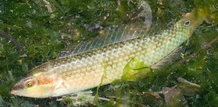
Changi, Jan 15
Photo
shared by Marcus Ng on facebook. |
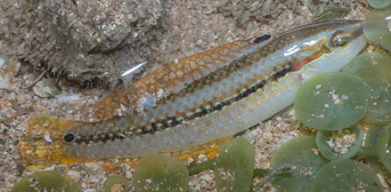
Chek Jawa, May 25
Photo shared by Marcus Ng on facebook. |
|
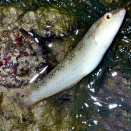
Sentosa Tg Rimau, Oct 25
Photo shared by Loh Kok Sheng on facebook. |
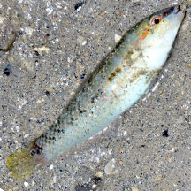
St John's Island, Oct 25
Photo
shared by Loh Kok Sheng on facebook. |
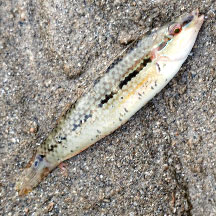
Kusu Island, May 25
Photo
shared by Richard Kuah on facebook. |
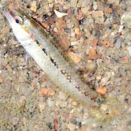
Small Sisters Island, Aug 21
Photo
shared by Loh Kok Sheng on facebook. |
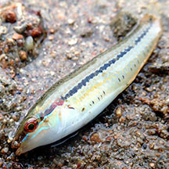
Big Sisters Island, Sep 20
Photo
shared by Jianlin Liu on facebook. |
|
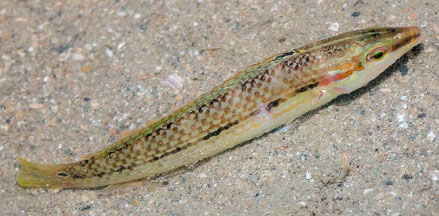
St John's Island, Jan 20
Photo
shared by Marcus Ng on facebook. |
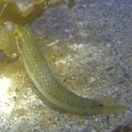
Lazarus Island, Feb 11
Photo
shared by Russel Low on facebook. |
Big Sisters Island, Sep 20
Photo
shared by Jianlin Liu on facebook. |
Small Sisters Island, Aug 21
Photo
shared by Loh Kok Sheng on facebook. |
|
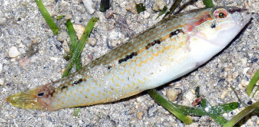
Cyrene, Sep 20
Photo
shared by Loh Kok Sheng on facebook. |
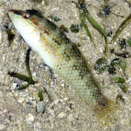
Cyrene, Jul 25
Photo shared by Loh Kok Sheng on facebook. |
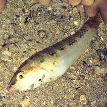
Terumbu Semakau, Jul 14
Photo
shared by Juria Toramae on facebook. |
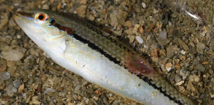
Beting Bemban Besar, May 11
Photo shared by Russel Low on facebook. |
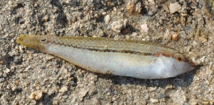
Terumbu Bemban, Apr 11
Photo
shared by Rene Ong on facebook. |
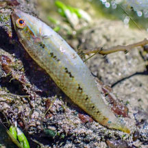
Terumbu Pempang Laut, Mar 24
Photo
shared by Vincent Choo on facebook. |
|
|